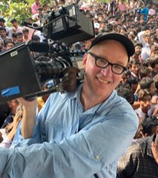

Local news
Local and community journalism and news deserts.
3 films · 2 sessions · 14 people
Often together with: Funding & distributionCriminal justice & prisonsPolicingIndigenous peoples & landLegal & safety for reportersAfrica
Films
 Crime & ParodyWill Thwaites2026 · 88 min
Crime & ParodyWill Thwaites2026 · 88 min Stripped for Parts: American Journalism on the BrinkRick Goldsmith2023 · 95 min
Stripped for Parts: American Journalism on the BrinkRick Goldsmith2023 · 95 min Storm LakeJerry Risius, Beth Levison2021 · 85 min
Storm LakeJerry Risius, Beth Levison2021 · 85 min
Sessions
- 2026 · Fri Nov 6 · 10:35amPanelYour City Your StoryLois Nembhard, Sonam Vashi, George Kevin Jordan, Noah Kincade, Rachel Mason
- 2021 · Fri Oct 15 · 3:15pmPanelLocal Journalism: of Deserts and RegrowthSusan Leath, Jennifer Preston, Madeleine Bair, Sarah Blustain, Letrell Crittenden, Beth Levison
People most involved
 Beth LevisonFilmmaker, panelist · 2021
Beth LevisonFilmmaker, panelist · 2021 Rick GoldsmithFilmmaker · 2023
Rick GoldsmithFilmmaker · 2023 Will ThwaitesPanelist, filmmaker · 2026
Will ThwaitesPanelist, filmmaker · 2026
Jerry RisiusFilmmaker · 2021 Lois NembhardPanelist · 2026
Lois NembhardPanelist · 2026 Sonam VashiPanelist · 2026
Sonam VashiPanelist · 2026 George Kevin JordanPanelist · 2026
George Kevin JordanPanelist · 2026 Noah KincadePanelist · 2026
Noah KincadePanelist · 2026 Rachel MasonPanelist, filmmaker · 2026
Rachel MasonPanelist, filmmaker · 2026- Susan LeathPanelist · 2021
 Jennifer PrestonPanelist · 2021
Jennifer PrestonPanelist · 2021 Madeleine BairPanelist · 2021
Madeleine BairPanelist · 2021 Sarah BlustainPanelist · 2021
Sarah BlustainPanelist · 2021 Letrell CrittendenPanelist · 2021
Letrell CrittendenPanelist · 2021